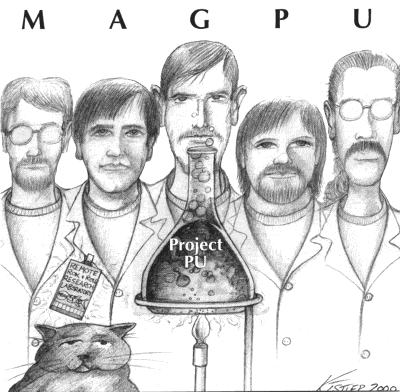

Project Pu, the first official CD release from Magpu, is now available! This hour-long CD is derived from two days of completely improvised jamming in October 1999, expertly mixed and edited by Terry McIntyre. Various extra goodies and studio wizardry are woven in between the jam segments, resulting in an uninterrupted sonic experience.
The full band tracks were recorded in October 1999 at the Remote Rok and Roll Research Laboratory. This music was created without any specific plan or structure; we just started recording and played whatever occurred to us at the moment. The best excerpts were then selected and assembled.
The extra goodies include altered but lucid radio interference, a loopy collage, malfunctioning synthesizers, and an ambient track created by Kurt and our friend Erich Schriefer.
It'll take you places.
For information about ordering a copy, send e-mail to moop@magpu.com.
Brian Cox: Guitar
Kyle Grundmann: Bass
Kurt Kistler: Keyboards
Cliff McCarthy: MalletKAT
Terry McIntyre: Drums
with...
Erich Schriefer: Guitar and Effects on track 8